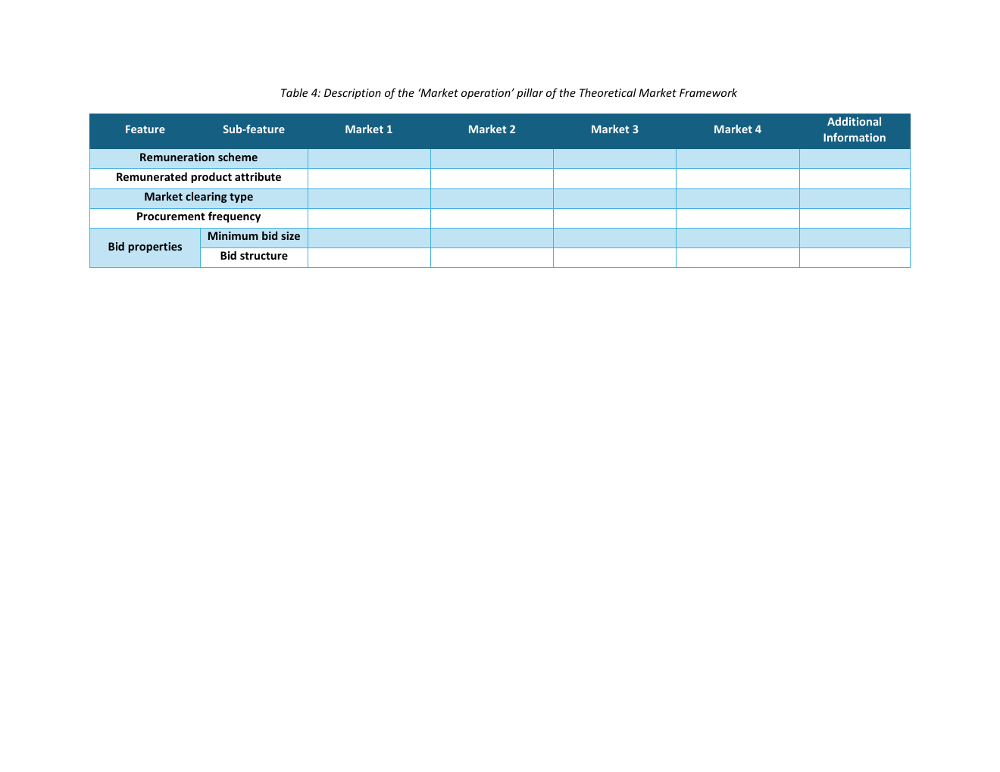

Source-grounded tutorial
How to think about this pillar
Describes the practical operating rules: payment, what is remunerated, clearing mode, procurement frequency, and bid properties.
The procedure of trust
Defines the operating rules of each sub-market: payment, clearing, frequency and bid properties.
Jump to feedbackSource-grounded tutorial
Describes the practical operating rules: payment, what is remunerated, clearing mode, procurement frequency, and bid properties.

Market-design intelligence
Record the rules participants face in each market.
Record payment rule and whether availability, activation or both are remunerated.
State clearing is continuous or discrete and how often procurement is run.
Record minimum bid size and whether bids are simple or complex.
Theoretical Market Framework feature map
Use the table as a compact terminology and data-entry guide. The final column links each definition to its source section; open the cited page or download the full source PDF.
| Feature | Sub-feature / decision | Data type | Definition | How to read the choice | Definition source |
|---|---|---|---|---|---|
| Remuneration scheme | Payment rule | Categorical: no remuneration / negotiated / pay-as-bid / pay-as-clear / nodal / cost-based | Rule used to determine payment for successful market participation. | Select payment rule used in the market. | |
| Remunerated product attribute | What is remunerated | Multi-select: availability / activation; active / reactive / apparent power | Product component and physical quantity for which payment is made. | Record whether availability, activation or both are paid. | |
| Market clearing type | Clearing mode | Categorical: continuous / discrete | Whether trades clear continuously while open or in discrete clearing events. | Choose clearing mode. | |
| Procurement frequency | How often procurement runs | Categorical: event-based / daily / weekly / monthly / other | How often the sub-market procurement process is run. | Record repetition frequency, not session gate timing. | |
| Bid properties | Minimum bid size | Numeric + unit (kW/MW) | Minimum capacity or energy volume accepted in a bid. | Enter threshold and unit. | |
| Bid properties | Bid structure | Categorical: simple / complex | High-level complexity of bids accepted by the market. | Record permitted bid structure. |
For each market, record remuneration, clearing type, procurement frequency, minimum bid size, and bid structure.

Expert feedback
Does this pillar contain the minimum information needed to compare and implement sub-market operation?
Open the discussion to comment through the project GitHub Q&A thread. Opening the discussion or selecting “No further feedback” records this pillar once in the review progress.